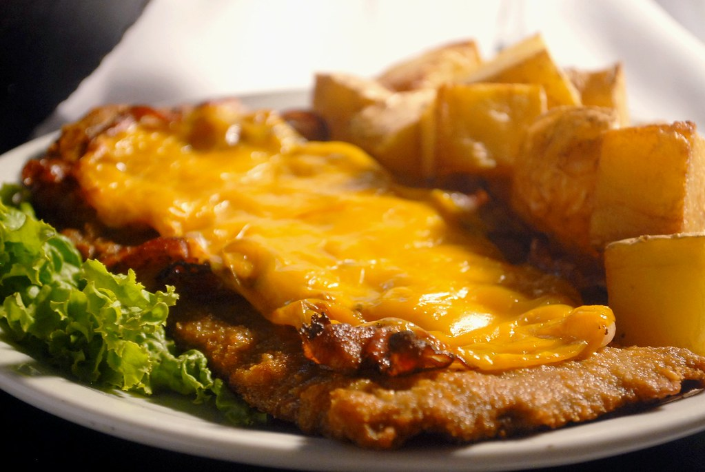

Milanesa Recipe

Description:
Milanesa are a traditional Argentine dish made of thin slices of meat (usually beef or chicken)
breaded and fried until golden and crispy. Similar to a schnitzel, they are a
staple in Argentine households and often served with mashed potatoes, fries, or salad.
Ingredients (Serves 4)
- 4 beef cutlets
- 2 eggs
- 2 cloves of garli
- 1 tablespoon chopped par
- Salt and pepper to taste
- 1 1/2 cups bread
- 1/2 cup grated Parmesan cheese (optional)
- Vegetable oil for frying
Steps:
- Prepare the egg mix
- In a shallow bowl, beat the eggs.
- Add the minced garlic, chopped parsley (if using), salt, and pepper.
- Mix well.
- Prepare the breadcrumb mixture:
- In another shallow dish, mix the breadcrumbs with the grated PArmesan (if using)
- Bread the beef:
- Dip each beef cutlet into the egg mixture, coating both sides.
- Then coat it with the breadcrumb mixture, pressing gently so the crumbs stick well.
- Place the breaded cutlets on a plate or tray.
- Let it rest (optional but recommended)
- Let the breaded cutlets rest in the fridge for 15-30 minutes. This helps
the coating stick better during frying.
- Fry milanesas:
- In a large skillet, heat about 1/2 inch of vegetable oil over medium-high heat.
- Fry the milanesas one or two at time (don't overcrowd the pan) until
golden brown, about 2-3 minutes per side.
-
Remove and place on paper towels to drain excess oil.
- Serve:
-
Serve hot with mashed potatoes, rice, salad, or in a sandwich (milanesa sandwich!).
Home